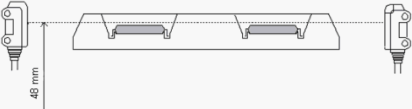

A4-1 How to adjust about device detection gate sensor of Output shuttle ( 1 )
Gate sensor photoelectric type adjustment for NS-7000 / NS-8010 / NS-8040 / NS-8080H
Unloading Side Shuttle Sensor Adjustment (Gate Sensor)
Layout of the gate sensor:
The gate sensor control board is installed to the side face in the Handler unloading side.
LED on the board lights when the sensor light is blocked.
Check the light axis height of the SLIT sensor.
It should be higher than the device surface (48 mm) to enable the light to pass through.
(Red and green lamps are ON)

Example of detecting operation (Shuttle 1)
1. When the unloading side shuttle is inside the chamber, the light passes through all of "1-SLIT", "1-1", and "1-2".
2. When the shuttle comes out of the chamber, the light is blocked in all of “1-SLIT”, “1-1”, and
“1-2”.
3. In the position below, the light passes through "1-SLIT", but it is blocked in "1-1" and "1-2".
4. In the position below, the light is blocked in all of "1-SLIT", "1-1", and "1-2".
5. In the position below (device pocket), the light passes through "1-SLIT". If the devises are on the pocket, the light is blocked in "1-1" and "1-2", but it can pass through if there are no devices on.
6. In the position below, the light is blocked in all of "1-SLIT", "1-1", and "1-2".
7. Same as (5), the light passes through "1-SLIT" on the following device pocket.
If the devises are on the pocket, the light is blocked in "1-1" and "1-2", but it can pass through if there are no devices on.
8. Same as (6), the light is blocked in all of "1-SLIT", "1-1", and "1-2".
9. In the position below, the light passes through "1-SLIT", but it is blocked in "1-1" and "1-2".
10. In the Output Arm pickup position, the light is blocked in all of "1-SLIT", "1-1", and "1-2".
< NOTE > If the SLIT sensor reacts (the light can pass through) in other cases not described above, it causes the detection sensor error. If you attach the shuttle loading side with guide pin + mechanical stop to the unloading side by mistake, the sensor can react wrongly by the mirror-like mechanical stop surface.